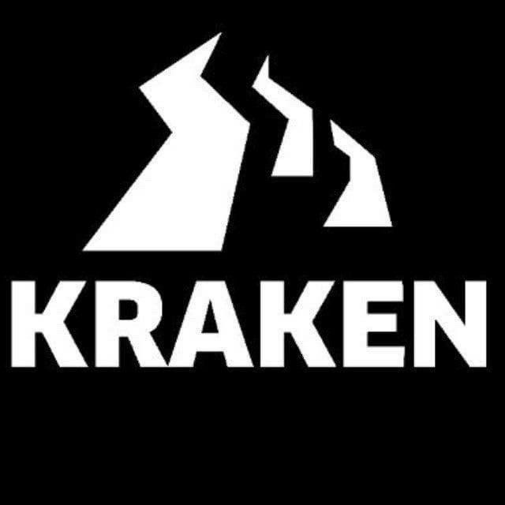

На площадке представлен обширный каталог для шоппинга. Разнообразие экзотических товаров не оставит тебя равнодушным. Официальное зеркало, одобренное администраторами площадки кракен.
Официальная ссылка: kraken20.vip
Обменник: bestchange.ru
ОДОБРЕНО МОДЕРАТОРАМИ ПЛОЩАДКИ
Вам купон для любого магазина площадки: KRAK-NEW-5000-2943
Заходим на оригинальную ссылку: Kraken20.vip
TOR:kraken22.run
Кракен официальная ссылка
В этой статье расскажем, как безопасно зайти на даркнет маркетплейс Кракен.
Вы узнаете, как использовать официальные зеркала Kraken, ссылки на сайт Кракен и способы безопасного доступа через ВПН и ТОР.
Кракен является одним из наиболее популярных даркнет маркетплейсов, и доступ к нему требует определенных знаний и мер предосторожности.
Кракен ( Kraken ) - это даркнет маркетплейс, предлагающий широкий ассортимент экзотических товаров и услуг.
Из-за своего содержания и значимости доступ к Кракен осуществляется через сети типа onion, обеспечивающие анонимность пользователей.
Переходник на сайт Kraken - kraken22.run
Скачайте и установите TOR с официального сайта Tor
Первым шагом для доступа к Кракен через ТОР является установка ТОР браузера. Это специализированный браузер, который позволяет анонимно заходить на сайты в onion.
Скачайте ТОР браузер с официального сайта Tor Project.
Установите браузер на ваш компьютер или мобильное устройство.Запустите ТОР браузер.
Для доступа к Кракен важно использовать только проверенные и официальные ссылки.
Официальное зеркало Kraken гарантирует безопасный доступ и защиту от фишинговых сайтов.
Официальная ссылка на Кракен - kraken20.vip
Используйте проверенные ссылки Kraken20.vip.
Зеркала сайта Кракен обеспечивают резервный доступ в случае блокировки основного сайта.
Например, зеркало Кракен через ТОР - kraken22.run
Подключитесь к VPN перед использованием TOR для дополнительной безопасности.
Не вводите личные данные на подозрительных сайтах.
Используйте ВПН для дополнительной защиты.
Проверяйте поисковую строку на наличие ошибок и подлинности.
Для доступа к Кракен через onion необходимо использовать TOR браузер.
Переходите по официальным ссылкам и совершайте обмен или пополняйте свой кошелек в личном кабинете
Это даркнет сайт на котором собраны ссылки на форумы
Вход и авторизация. Далее обмен или пополнение в личном кабинете
Это маркетплейс с экзотическими товарами
Это способ войти в личный кабинет на сайте
Не употребляйте и берегите здоровье
Зеркала Кракен - это специальные резервные ссылки для избегания блокировки.
